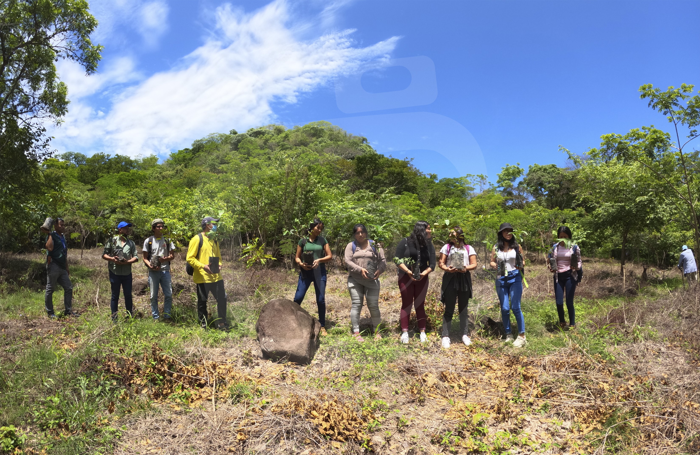

Sub Unidad Ambiental CIMAT desarrolla campaña de reforestación

El pasado jueves 26 de mayo la Sub Unidad Ambiental de la Facultad de Ciencias Naturales y Matemática llevó a cabo la campaña de reforestación de la cuenca del rio y la poza “Bruja” en el Municipio de Jocoro, departamento de Morazán.